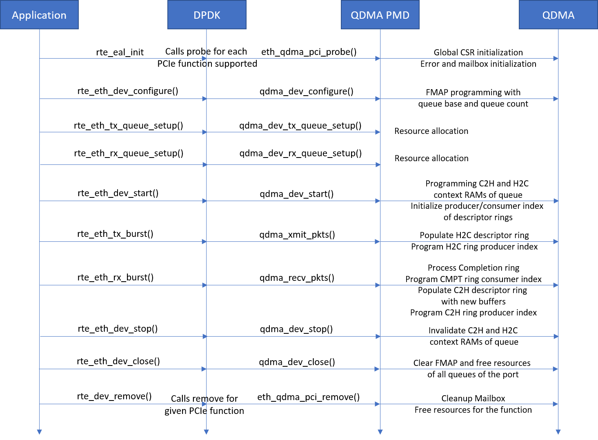

Developers Guide¶
QEP DPDK driver is implemented as an Ethernet poll mode driver in DPDK v18.11. It supports streaming interface to QDMA.
Driver interfaces and callbacks¶
The Driver registers two driver interfaces (net_qdma for PFs and net_qdma_vf for VFs) with DPDK RTE.
However, QEP supports only PF interface.
Below eth_dev_ops callbacks are implemented by the driver interface of the DPDK driver.
static struct eth_dev_ops qdma_eth_dev_ops = {
.dev_configure = qdma_dev_configure,
.dev_infos_get = qdma_dev_infos_get,
.dev_start = qdma_dev_start,
.dev_stop = qdma_dev_stop,
.dev_close = qdma_dev_close,
.dev_reset = qdma_dev_reset,
.link_update = qdma_dev_link_update,
.dev_set_link_up = qep_dev_set_link_up,
.dev_set_link_down = qep_dev_set_link_down,
.rx_queue_setup = qdma_dev_rx_queue_setup,
.tx_queue_setup = qdma_dev_tx_queue_setup,
.rx_queue_release = qdma_dev_rx_queue_release,
.tx_queue_release = qdma_dev_tx_queue_release,
.rx_queue_start = qdma_dev_rx_queue_start,
.rx_queue_stop = qdma_dev_rx_queue_stop,
.tx_queue_start = qdma_dev_tx_queue_start,
.tx_queue_stop = qdma_dev_tx_queue_stop,
.rx_queue_count = qdma_dev_rx_queue_count,
.rx_descriptor_status = qdma_dev_rx_descriptor_status,
.tx_descriptor_status = qdma_dev_tx_descriptor_status,
.tx_done_cleanup = qdma_dev_tx_done_cleanup,
.queue_stats_mapping_set = qdma_dev_queue_stats_mapping,
.get_reg = qdma_dev_get_regs,
.stats_get = qdma_dev_stats_get,
.stats_reset = qdma_dev_stats_reset,
.xstats_get_names = qep_dev_xstats_get_names,
.xstats_get_names_by_id = qep_dev_xstats_get_names_by_id,
.xstats_get = qep_dev_xstats_get,
.xstats_get_by_id = qep_dev_xstats_get_by_id,
.xstats_reset = qep_dev_xstats_reset,
.mtu_set = qdma_dev_mtu_set,
.rxq_info_get = qep_dev_rxq_info_get,
.txq_info_get = qep_dev_txq_info_get,
.dev_supported_ptypes_get = qep_dev_supported_ptypes_get,
.reta_query = qep_dev_rss_reta_query,
.reta_update = qep_dev_rss_reta_update,
.rss_hash_conf_get = qep_dev_rss_conf_get,
.filter_ctrl = qep_filter_ctrl,
};
In addition, the DPDK driver also implements below rte_flow_ops for RSS configuration.
const struct rte_flow_ops qep_flow_ops = {
.validate = qep_flow_validate,
.create = qep_flow_create,
.destroy = qep_flow_destroy,
.flush = qep_flow_flush,
};
Below sequence diagram depicts the application call flow to the driver callbacks and their high level operations.
Implementation details of the callback APIs is described further in
Additional interfaces are exported by the driver for QDMA configuration. These new interfaces are described in
DMA Hardware Error Monitoring¶
There are various causes for errors in QDMA IP e.g. descriptor errors, DMA engine errors, etc. If the errors are enabled by SW, QDMA logs the status of error in the respective global status registers.
DPDK driver executes a poll thread qdma_check_errors() every 1 second to check the error status and log the type of HW error occured on the console.
DPDK Driver debug¶
DPDK driver provides APIs rte_pmd_qep_dbg_regdump(), rte_pmd_qep_dbg_qinfo(),
rte_pmd_qep_dbg_qdesc(), rte_pmd_qep_dbg_stmninfo(), rte_pmd_qep_dbg_lbusinfo() to dump debug information.
Below debug information can be dumped using these API
- Dump QDMA registers
- Dump queue contexts for the given queue id
- Dump software information for the given queue id
- Dump the specified descriptor ring of the given queue id
- Dump STM-N status and statistics registers
- Dump LBUS status and statistics registers
User application can call these API to dump the required debug information.
dpdk-procinfo¶
Xilinx provides patch for dpdk-procinfo application to dump debug information using these APIs. This application should be run as a secondary application in a separate shell to the primary application. The patch adds/updates following option in dpdk-procinfo application.
-g: To display QDMA configuration registers
-q <queue id>: To Select queue
—qinfo: To display QDMA queue context and SW structure
–desc-dump {rx | tx | cmpt}: To dump QDMA queue descriptors
—xstats: To display extended port statistics
–stmn: To print STM-N and LBUS debug information
Sample execution command and output is given below
QDMA Registers¶
./x86_64-native-linuxapp-gcc/app/dpdk-procinfo -w 1a:00.2 -- -gEAL: Detected 24 lcore(s) EAL: Detected 1 NUMA nodes EAL: Multi-process socket /var/run/dpdk/rte/mp_socket_5715_693a0b69e25f8 EAL: Probing VFIO support... EAL: PCI device 0000:05:00.0 on NUMA socket 0 EAL: probe driver: 8086:1533 net_e1000_igb EAL: PCI device 0000:06:00.0 on NUMA socket 0 EAL: probe driver: 1d6a:7b1 net_atlantic EAL: PCI device 0000:1a:00.2 on NUMA socket 0 EAL: probe driver: 10ee:5016 net_qep FPGA Config Registers for port_id: 0 -------- Offset Name Value(Hex) Value(Dec) [ 0] CFG_BLOCK_ID_0 0x1fd30000 533921792 [ 0x4] CFG_BUSDEV_0 0 0 [ 0x8] CFG_PCIE_MAX_PL_SZ_0 0x51 81 [ 0xc] CFG_PCIE_MAX_RDRQ_SZ_0 0x52 82 [ 0x10] CFG_SYS_ID_0 0x1234 4660 [ 0x14] CFG_MSI_EN_0 0x20202 131586 [ 0x18] CFG_PCIE_DATA_WIDTH_0 0x3 3 [ 0x1c] CFG_PCIE_CTRL_0 0x1 1 [ 0x40] CFG_AXI_USR_MAX_PL_SZ_0 0x55 85 [ 0x44] CFG_AXI_USR_MAX_RDRQ_SZ_0 0x55 85 [ 0x4c] CFG_MISC_CTRL_0 0x10009 65545 [ 0x80] CFG_SCRATCH_REG_0 0 0 [ 0x84] CFG_SCRATCH_REG_1 0 0 [ 0x88] CFG_SCRATCH_REG_2 0 0 [ 0x8c] CFG_SCRATCH_REG_3 0 0 [ 0x90] CFG_SCRATCH_REG_4 0 0 [ 0x94] CFG_SCRATCH_REG_5 0 0 [ 0x98] CFG_SCRATCH_REG_6 0 0 [ 0x9c] CFG_SCRATCH_REG_7 0 0 [ 0xf0] QDMA_RAM_SBE_MSK_A_0 0xffffff11 4294967057 [ 0xf4] QDMA_RAM_SBE_STS_A_0 0 0 [ 0xf8] QDMA_RAM_DBE_MSK_A_0 0xffffff11 4294967057 [ 0xfc] QDMA_RAM_DBE_STS_A_0 0 0 [ 0x100] GLBL2_ID_0 0x1fd70000 534183936 [ 0x104] GLBL2_PF_BL_INT_0 0x1101 4353 [ 0x108] GLBL2_PF_VF_BL_INT_0 0 0 [ 0x10c] GLBL2_PF_BL_EXT_0 0x4044 16452 [ 0x110] GLBL2_PF_VF_BL_EXT_0 0 0 [ 0x114] GLBL2_CHNL_INST_0 0x30101 196865 [ 0x118] GLBL2_CHNL_QDMA_0 0x30f0f 200463 [ 0x11c] GLBL2_CHNL_STRM_0 0x30000 196608 [ 0x120] GLBL2_QDMA_CAP_0 0x800 2048 [ 0x128] GLBL2_PASID_CAP_0 0 0 [ 0x12c] GLBL2_FUNC_RET_0 0x2 2 [ 0x130] GLBL2_SYS_ID_0 0 0 [ 0x134] GLBL2_MISC_CAP_0 0x1000000 16777216 [ 0x1b8] GLBL2_DBG_PCIE_RQ_0 0x7c50003 130351107 [ 0x1bc] GLBL2_DBG_PCIE_RQ_1 0x6024 24612 [ 0x1c0] GLBL2_DBG_AXIMM_WR_0 0x600021 6291489 [ 0x1c4] GLBL2_DBG_AXIMM_WR_1 0 0 [ 0x1c8] GLBL2_DBG_AXIMM_RD_0 0x1 1 [ 0x1cc] GLBL2_DBG_AXIMM_RD_1 0 0 [ 0x204] GLBL_RNGSZ_0 0x801 2049 [ 0x208] GLBL_RNGSZ_1 0x41 65 [ 0x20c] GLBL_RNGSZ_2 0x81 129 [ 0x210] GLBL_RNGSZ_3 0xc1 193 [ 0x214] GLBL_RNGSZ_4 0x101 257 [ 0x218] GLBL_RNGSZ_5 0x181 385 [ 0x21c] GLBL_RNGSZ_6 0x201 513 [ 0x220] GLBL_RNGSZ_7 0x301 769 [ 0x224] GLBL_RNGSZ_8 0x401 1025 [ 0x228] GLBL_RNGSZ_9 0x601 1537 [ 0x22c] GLBL_RNGSZ_10 0xc01 3073 [ 0x230] GLBL_RNGSZ_11 0x1001 4097 [ 0x234] GLBL_RNGSZ_12 0x1801 6145 [ 0x238] GLBL_RNGSZ_13 0x2001 8193 [ 0x23c] GLBL_RNGSZ_14 0x3001 12289 [ 0x240] GLBL_RNGSZ_15 0x4001 16385 [ 0x248] GLBL_ERR_STAT_0 0 0 [ 0x24c] GLBL_ERR_MASK_0 0xfff 4095 [ 0x250] GLBL_DSC_CFG_0 0x30 48 [ 0x254] GLBL_DSC_ERR_STS_0 0 0 [ 0x258] GLBL_DSC_ERR_MSK_0 0x7ff 2047 [ 0x25c] GLBL_DSC_ERR_LOG_0 0 0 [ 0x260] GLBL_DSC_ERR_LOG_1 0 0 [ 0x264] GLBL_TRQ_ERR_STS_0 0 0 [ 0x268] GLBL_TRQ_ERR_MSK_0 0xf 15 [ 0x26c] GLBL_TRQ_ERR_LOG_0 0 0 [ 0x270] GLBL_DSC_DBG_DAT_0 0x221e0000 572391424 [ 0x274] GLBL_DSC_DBG_DAT_1 0x8080 32896 [ 0x27c] GLBL_DSC_ERR_LOG2_0 0 0 [ 0x288] GLBL_INTERRUPT_CFG_0 0 0 [ 0x400] TRQ_SEL_FMAP_0 0 0 [ 0x404] TRQ_SEL_FMAP_1 0 0 [ 0x408] TRQ_SEL_FMAP_2 0x8100 33024 [ 0x40c] TRQ_SEL_FMAP_3 0 0 [ 0x804] IND_CTXT_DATA_0 0x10f5a 69466 [ 0x808] IND_CTXT_DATA_1 0xfffffffe 4294967294 [ 0x80c] IND_CTXT_DATA_2 0xffffffff 4294967295 [ 0x810] IND_CTXT_DATA_3 0xffffffff 4294967295 [ 0x814] IND_CTXT_DATA_4 0xffffffff 4294967295 [ 0x818] IND_CTXT_DATA_5 0xffffffff 4294967295 [ 0x81c] IND_CTXT_DATA_6 0xffffffff 4294967295 [ 0x820] IND_CTXT_DATA_7 0xffffffff 4294967295 [ 0x824] IND_CTXT_MASK_0 0xffffffff 4294967295 [ 0x828] IND_CTXT_MASK_1 0xffffffff 4294967295 [ 0x82c] IND_CTXT_MASK_2 0xffffffff 4294967295 [ 0x830] IND_CTXT_MASK_3 0xffffffff 4294967295 [ 0x834] IND_CTXT_MASK_4 0xffffffff 4294967295 [ 0x838] IND_CTXT_MASK_5 0xffffffff 4294967295 [ 0x83c] IND_CTXT_MASK_6 0xffffffff 4294967295 [ 0x840] IND_CTXT_MASK_7 0xffffffff 4294967295 [ 0x844] IND_CTXT_CMD_0 0x87ac 34732 [ 0xa00] C2H_TIMER_CNT_0 0x1 1 [ 0xa04] C2H_TIMER_CNT_1 0x2 2 [ 0xa08] C2H_TIMER_CNT_2 0x4 4 [ 0xa0c] C2H_TIMER_CNT_3 0x5 5 [ 0xa10] C2H_TIMER_CNT_4 0x8 8 [ 0xa14] C2H_TIMER_CNT_5 0xa 10 [ 0xa18] C2H_TIMER_CNT_6 0xf 15 [ 0xa1c] C2H_TIMER_CNT_7 0x14 20 [ 0xa20] C2H_TIMER_CNT_8 0x19 25 [ 0xa24] C2H_TIMER_CNT_9 0x1e 30 [ 0xa28] C2H_TIMER_CNT_10 0x32 50 [ 0xa2c] C2H_TIMER_CNT_11 0x4b 75 [ 0xa30] C2H_TIMER_CNT_12 0x64 100 [ 0xa34] C2H_TIMER_CNT_13 0x7d 125 [ 0xa38] C2H_TIMER_CNT_14 0x96 150 [ 0xa3c] C2H_TIMER_CNT_15 0xc8 200 [ 0xa40] C2H_CNT_THRESH_0 0x40 64 [ 0xa44] C2H_CNT_THRESH_1 0x2 2 [ 0xa48] C2H_CNT_THRESH_2 0x4 4 [ 0xa4c] C2H_CNT_THRESH_3 0x8 8 [ 0xa50] C2H_CNT_THRESH_4 0x10 16 [ 0xa54] C2H_CNT_THRESH_5 0x18 24 [ 0xa58] C2H_CNT_THRESH_6 0x20 32 [ 0xa5c] C2H_CNT_THRESH_7 0x30 48 [ 0xa60] C2H_CNT_THRESH_8 0x50 80 [ 0xa64] C2H_CNT_THRESH_9 0x60 96 [ 0xa68] C2H_CNT_THRESH_10 0x70 112 [ 0xa6c] C2H_CNT_THRESH_11 0x80 128 [ 0xa70] C2H_CNT_THRESH_12 0x90 144 [ 0xa74] C2H_CNT_THRESH_13 0xa0 160 [ 0xa78] C2H_CNT_THRESH_14 0xb0 176 [ 0xa7c] C2H_CNT_THRESH_15 0xc0 192 [ 0xa88] C2H_STAT_S_AXIS_C2H_ACCEPTED_0 0x12 18 [ 0xa8c] C2H_STAT_S_AXIS_CMPT_ACCEPTED_0 0x12 18 [ 0xa90] C2H_STAT_DESC_RSP_PKT_ACCEPTED_0 0x12 18 [ 0xa94] C2H_STAT_AXIS_PKG_CMP_0 0x12 18 [ 0xa98] C2H_STAT_DESC_RSP_ACCEPTED_0 0x12 18 [ 0xa9c] C2H_STAT_DESC_RSP_CMP_0 0x12 18 [ 0xaa0] C2H_STAT_WRQ_OUT_0 0x15 21 [ 0xaa4] C2H_STAT_WPL_REN_ACCEPTED_0 0x24 36 [ 0xaa8] C2H_STAT_TOTAL_WRQ_LEN_0 0x900 2304 [ 0xaac] C2H_STAT_TOTAL_WPL_LEN_0 0x900 2304 [ 0xab0] C2H_BUF_SZ_0 0x1000 4096 [ 0xab4] C2H_BUF_SZ_1 0x100 256 [ 0xab8] C2H_BUF_SZ_2 0x200 512 [ 0xabc] C2H_BUF_SZ_3 0x400 1024 [ 0xac0] C2H_BUF_SZ_4 0x800 2048 [ 0xac4] C2H_BUF_SZ_5 0xf80 3968 [ 0xac8] C2H_BUF_SZ_6 0x1000 4096 [ 0xacc] C2H_BUF_SZ_7 0x1000 4096 [ 0xad0] C2H_BUF_SZ_8 0x1000 4096 [ 0xad4] C2H_BUF_SZ_9 0x1000 4096 [ 0xad8] C2H_BUF_SZ_10 0x1000 4096 [ 0xadc] C2H_BUF_SZ_11 0x1000 4096 [ 0xae0] C2H_BUF_SZ_12 0x1000 4096 [ 0xae4] C2H_BUF_SZ_13 0x2000 8192 [ 0xae8] C2H_BUF_SZ_14 0x233a 9018 [ 0xaec] C2H_BUF_SZ_15 0x4000 16384 [ 0xaf0] C2H_ERR_STAT_0 0 0 [ 0xaf4] C2H_ERR_MASK_0 0xfedb 65243 [ 0xaf8] C2H_FATAL_ERR_STAT_0 0 0 [ 0xafc] C2H_FATAL_ERR_MASK_0 0x7df1b 515867 [ 0xb00] C2H_FATAL_ERR_ENABLE_0 0 0 [ 0xb04] GLBL_ERR_INT_0 0x1000001 16777217 [ 0xb08] C2H_PFCH_CFG_0 0xc201100 203428096 [ 0xb0c] C2H_INT_TIMER_TICK_0 0x19 25 [ 0xb10] C2H_STAT_DESC_RSP_DROP_ACCEPTED_0 0 0 [ 0xb14] C2H_STAT_DESC_RSP_ERR_ACCEPTED_0 0 0 [ 0xb18] C2H_STAT_DESC_REQ_0 0x12 18 [ 0xb1c] C2H_STAT_DEBUG_DMA_ENG_0 0 0 [ 0xb20] C2H_STAT_DEBUG_DMA_ENG_1 0x82409012 2185269266 [ 0xb24] C2H_STAT_DEBUG_DMA_ENG_2 0xc1204812 3240118290 [ 0xb28] C2H_STAT_DEBUG_DMA_ENG_3 0x105415 1070101 [ 0xb2c] C2H_DBG_PFCH_ERR_CTXT_0 0 0 [ 0xb30] C2H_FIRST_ERR_QID_0 0 0 [ 0xb34] STAT_NUM_CMPT_IN_0 0x12 18 [ 0xb38] STAT_NUM_CMPT_OUT_0 0x12 18 [ 0xb3c] STAT_NUM_CMPT_DRP_0 0 0 [ 0xb40] STAT_NUM_STAT_DESC_OUT_0 0x12 18 [ 0xb44] STAT_NUM_DSC_CRDT_SENT_0 0 0 [ 0xb48] STAT_NUM_FCH_DSC_RCVD_0 0 0 [ 0xb4c] STAT_NUM_BYP_DSC_RCVD_0 0x12 18 [ 0xb50] C2H_CMPT_COAL_CFG_0 0x80064014 2147893268 [ 0xb54] C2H_INTR_H2C_REQ_0 0 0 [ 0xb58] C2H_INTR_C2H_MM_REQ_0 0 0 [ 0xb5c] C2H_INTR_ERR_INT_REQ_0 0 0 [ 0xb60] C2H_INTR_C2H_ST_REQ_0 0 0 [ 0xb64] C2H_INTR_H2C_ERR_MM_MSIX_ACK_0 0 0 [ 0xb68] C2H_INTR_H2C_ERR_MM_MSIX_FAIL_0 0 0 [ 0xb6c] C2H_INTR_H2C_ERR_MM_NO_MSIX_0 0 0 [ 0xb70] C2H_INTR_H2C_ERR_MM_CTXT_INVAL_0 0 0 [ 0xb74] C2H_INTR_C2H_ST_MSIX_ACK_0 0 0 [ 0xb78] C2H_INTR_C2H_ST_MSIX_FAIL_0 0 0 [ 0xb7c] C2H_INTR_C2H_ST_NO_MSIX_0 0 0 [ 0xb80] C2H_INTR_C2H_ST_CTXT_INVAL_0 0 0 [ 0xb84] C2H_STAT_WR_CMP_0 0x12 18 [ 0xb88] C2H_STAT_DEBUG_DMA_ENG_4_0 0x41204800 1092634624 [ 0xb8c] C2H_STAT_DEBUG_DMA_ENG_5_0 0 0 [ 0xb90] C2H_DBG_PFCH_QID_0 0 0 [ 0xb94] C2H_DBG_PFCH_0 0 0 [ 0xb98] C2H_INT_DEBUG_0 0 0 [ 0xb9c] C2H_STAT_IMM_ACCEPTED_0 0 0 [ 0xba0] C2H_STAT_MARKER_ACCEPTED_0 0 0 [ 0xba4] C2H_STAT_DISABLE_CMP_ACCEPTED_0 0 0 [ 0xba8] C2H_C2H_PAYLOAD_FIFO_CRDT_CNT_0 0 0 [ 0xbac] C2H_INTR_DYN_REQ_0 0 0 [ 0xbb0] C2H_INTR_DYN_MSIX_0 0 0 [ 0xbb4] C2H_DROP_LEN_MISMATCH_0 0 0 [ 0xbb8] C2H_DROP_DESC_RSP_LEN_0 0 0 [ 0xbbc] C2H_DROP_QID_FIFO_LEN_0 0 0 [ 0xbc0] C2H_DROP_PAYLOAD_CNT_0 0 0 [ 0xbc4] QDMA_C2H_CMPT_FORMAT_0 0x20001 131073 [ 0xbc8] QDMA_C2H_CMPT_FORMAT_1 0 0 [ 0xbcc] QDMA_C2H_CMPT_FORMAT_2 0 0 [ 0xbd0] QDMA_C2H_CMPT_FORMAT_3 0 0 [ 0xbd4] QDMA_C2H_CMPT_FORMAT_4 0 0 [ 0xbd8] QDMA_C2H_CMPT_FORMAT_5 0 0 [ 0xbdc] QDMA_C2H_CMPT_FORMAT_6 0 0 [ 0xbe0] C2H_PFCH_CACHE_DEPTH_0 0x10 16 [ 0xbe4] C2H_CMPT_COAL_BUF_DEPTH_0 0x20 32 [ 0xbe8] C2H_PFCH_CRDT_0 0 0 [ 0xe00] H2C_ERR_STAT_0 0 0 [ 0xe04] H2C_ERR_MASK_0 0x1f 31 [ 0xe08] H2C_FIRST_ERR_QID_0 0 0 [ 0xe0c] H2C_DBG_REG_0 0x100010 1048592 [ 0xe10] H2C_DBG_REG_1 0x100020 1048608 [ 0xe14] H2C_DBG_REG_2 0 0 [ 0xe18] H2C_DBG_REG_3 0x44008025 1140883493 [ 0xe1c] H2C_DBG_REG_4 0xa16a2040 2708086848 [ 0xe20] H2C_FATAL_ERR_EN_0 0 0 [ 0xe24] H2C_REQ_THROT_0 0xc14000 12664832 [ 0xe28] H2C_ALN_DBG_REG0_0 0x10 16 [ 0x1004] C2H_MM_CONTROL_0 0x1 1 [ 0x1008] C2H_MM_CONTROL_1 0x1 1 [ 0x100c] C2H_MM_CONTROL_2 0x1 1 [ 0x1040] C2H_MM_STATUS_0 0x1 1 [ 0x1044] C2H_MM_STATUS_1 0x1 1 [ 0x1048] C2H_MM_CMPL_DSC_CNT_0 0 0 [ 0x1054] C2H_MM_ERR_CODE_EN_MASK_0 0 0 [ 0x1058] C2H_MM_ERR_CODE_0 0 0 [ 0x105c] C2H_MM_ERR_INFO_0 0 0 [ 0x10c0] C2H_MM_PERF_MON_CTRL_0 0 0 [ 0x10c4] C2H_MM_PERF_MON_CY_CNT_0 0 0 [ 0x10c8] C2H_MM_PERF_MON_CY_CNT_1 0 0 [ 0x10cc] C2H_MM_PERF_MON_DATA_CNT_0 0 0 [ 0x10d0] C2H_MM_PERF_MON_DATA_CNT_1 0 0 [ 0x10e8] C2H_MM_DBG_INFO_0 0x10002 65538 [ 0x10ec] C2H_MM_DBG_INFO_1 0 0 [ 0x1204] H2C_MM_CONTROL_0 0x1 1 [ 0x1208] H2C_MM_CONTROL_1 0x1 1 [ 0x120c] H2C_MM_CONTROL_2 0x1 1 [ 0x1240] H2C_MM_STATUS_0 0x1 1 [ 0x1248] H2C_MM_CMPL_DSC_CNT_0 0 0 [ 0x1254] H2C_MM_ERR_CODE_EN_MASK_0 0 0 [ 0x1258] H2C_MM_ERR_CODE_0 0 0 [ 0x125c] H2C_MM_ERR_INFO_0 0 0 [ 0x12c0] H2C_MM_PERF_MON_CTRL_0 0 0 [ 0x12c4] H2C_MM_PERF_MON_CY_CNT_0 0 0 [ 0x12c8] H2C_MM_PERF_MON_CY_CNT_1 0 0 [ 0x12cc] H2C_MM_PERF_MON_DATA_CNT_0 0 0 [ 0x12d0] H2C_MM_PERF_MON_DATA_CNT_1 0 0 [ 0x12e8] H2C_MM_DBG_INFO_0 0x10002 65538 [ 0x12ec] H2C_MM_REQ_THROT_0 0x8000 32768
QDMA queue context and SW structure¶
./x86_64-native-linuxapp-gcc/app/dpdk-procinfo -w 1a:00.2 -- --qinfo -q 15EAL: Detected 24 lcore(s) EAL: Detected 1 NUMA nodes EAL: Multi-process socket /var/run/dpdk/rte/mp_socket_5847_6947546087f38 EAL: Probing VFIO support... EAL: PCI device 0000:05:00.0 on NUMA socket 0 EAL: probe driver: 8086:1533 net_e1000_igb EAL: PCI device 0000:06:00.0 on NUMA socket 0 EAL: probe driver: 1d6a:7b1 net_atlantic EAL: PCI device 0000:1a:00.2 on NUMA socket 0 EAL: probe driver: 10ee:5016 net_qep ***** C2H Queue Contexts on port_id: 0 for queue_id: 15 ***** ---------------------------------------------------------------------------- SW Context ---------------------------------------------------------------------------- PIDX 0x7ff 2047 IRQ Arm 0 0 Function Id 0x2 2 Queue Enable 0x1 1 Fetch Credit Enable 0x1 1 Write back/Intr Check 0 0 Write back/Intr Interval 0 0 Address Translation 0 0 Fetch Max 0 0 Ring Size 0 0 Descriptor Size 0 0 Bypass Enable 0x1 1 MM Channel 0 0 Writeback Enable 0x1 1 Interrupt Enable 0 0 Port Id 0 0 Interrupt No Last 0 0 Error 0 0 Writeback Error Sent 0 0 IRQ Request 0 0 Marker Disable 0 0 Is Memory Mapped 0 0 Descriptor Ring Base Addr (Low) 0x9d3b7000 2637918208 Descriptor Ring Base Addr (High) 0xf 15 Interrupt Vector/Ring Index 0 0 Interrupt Aggregation 0 0 ---------------------------------------------------------------------------- HW Context ---------------------------------------------------------------------------- CIDX 0x80 128 Credits Consumed 0x80 128 Descriptors Pending 0x1 1 Queue Invalid No Desc Pending 0x1 1 Eviction Pending 0 0 Fetch Pending 0 0 ---------------------------------------------------------------------------- Credit Context ---------------------------------------------------------------------------- Credit 0x80 128 ***********RX Queue struct********** wb_pidx :0 wb_cidx :0 rx_tail (ST) :0 c2h_pidx :7ff rx_cmpt_cidx :0 cmpt_desc_len :8 rx_buff_size :1000 nb_rx_desc :801 nb_rx_cmpt_desc :1001 ep_addr :0 st_mode :1 rx_deferred_start :0 en_prefetch :0 en_bypass :1 dump_immediate_data :0 en_bypass_prefetch :1 dis_overflow_check :0 bypass_desc_sz :0 ringszidx :0 cmpt_ringszidx :b buffszidx :0 threshidx :0 timeridx :3 triggermode :4 ***** H2C Queue Contexts on port_id: 0 for queue_id: 15 ***** ---------------------------------------------------------------------------- SW Context ---------------------------------------------------------------------------- PIDX 0 0 IRQ Arm 0 0 Function Id 0x2 2 Queue Enable 0x1 1 Fetch Credit Enable 0x1 1 Write back/Intr Check 0x1 1 Write back/Intr Interval 0x1 1 Address Translation 0 0 Fetch Max 0 0 Ring Size 0 0 Descriptor Size 0x1 1 Bypass Enable 0x1 1 MM Channel 0 0 Writeback Enable 0x1 1 Interrupt Enable 0 0 Port Id 0 0 Interrupt No Last 0 0 Error 0 0 Writeback Error Sent 0 0 IRQ Request 0 0 Marker Disable 0 0 Is Memory Mapped 0 0 Descriptor Ring Base Addr (Low) 0x9d4ce000 2639060992 Descriptor Ring Base Addr (High) 0xf 15 Interrupt Vector/Ring Index 0 0 Interrupt Aggregation 0 0 ---------------------------------------------------------------------------- HW Context ---------------------------------------------------------------------------- CIDX 0 0 Credits Consumed 0 0 Descriptors Pending 0 0 Queue Invalid No Desc Pending 0x1 1 Eviction Pending 0 0 Fetch Pending 0 0 ---------------------------------------------------------------------------- Credit Context ---------------------------------------------------------------------------- Credit 0 0 ***********TX Queue struct************ wb_pidx :0 wb_cidx :0 h2c_pidx :0 tx_fl_tail :0 tx_desc_pend :0 nb_tx_desc :801 st_mode :1 tx_deferred_start :0 en_bypass :1 bypass_desc_sz :0 func_id :2 port_id :0 ringszidx :0 ep_addr :0
QDMA queue TX/RX descriptors**¶
./x86_64-native-linuxapp-gcc/app/dpdk-procinfo -w 1a:00.2 -- --desc-dump tx -q 2EAL: Detected 24 lcore(s) EAL: Detected 1 NUMA nodes EAL: Multi-process socket /var/run/dpdk/rte/mp_socket_6012_694ddae74784e EAL: Probing VFIO support... EAL: PCI device 0000:05:00.0 on NUMA socket 0 EAL: probe driver: 8086:1533 net_e1000_igb EAL: PCI device 0000:06:00.0 on NUMA socket 0 EAL: probe driver: 1d6a:7b1 net_atlantic EAL: PCI device 0000:1a:00.2 on NUMA socket 0 EAL: probe driver: 10ee:5016 net_qep ====== H2C ring descriptors===== Descriptor ID 0 at [0x15d577000], len=16 00000000: 00 00 00 00 00 00 00 00 00 00 00 00 00 00 00 00 | ................ Descriptor ID 1 at [0x15d577010], len=16 00000000: 00 00 00 00 00 00 00 00 00 00 00 00 00 00 00 00 | ................ Descriptor ID 2 at [0x15d577020], len=16 00000000: 00 00 00 00 00 00 00 00 00 00 00 00 00 00 00 00 | ................ Descriptor ID 3 at [0x15d577030], len=16 00000000: 00 00 00 00 00 00 00 00 00 00 00 00 00 00 00 00 | ................ Descriptor ID 4 at [0x15d577040], len=16 00000000: 00 00 00 00 00 00 00 00 00 00 00 00 00 00 00 00 | ................ Descriptor ID 5 at [0x15d577050], len=16 00000000: 00 00 00 00 00 00 00 00 00 00 00 00 00 00 00 00 | ................ Descriptor ID 6 at [0x15d577060], len=16 00000000: 00 00 00 00 00 00 00 00 00 00 00 00 00 00 00 00 | ................ Descriptor ID 7 at [0x15d577070], len=16 00000000: 00 00 00 00 00 00 00 00 00 00 00 00 00 00 00 00 | ................ Descriptor ID 8 at [0x15d577080], len=16 00000000: 00 00 00 00 00 00 00 00 00 00 00 00 00 00 00 00 | ................ Descriptor ID 9 at [0x15d577090], len=16 00000000: 00 00 00 00 00 00 00 00 00 00 00 00 00 00 00 00 | ................ Descriptor ID 10 at [0x15d5770a0], len=16 00000000: 00 00 00 00 00 00 00 00 00 00 00 00 00 00 00 00 | ................ Descriptor ID 11 at [0x15d5770b0], len=16 00000000: 00 00 00 00 00 00 00 00 00 00 00 00 00 00 00 00 | ................ Descriptor ID 12 at [0x15d5770c0], len=16 00000000: 00 00 00 00 00 00 00 00 00 00 00 00 00 00 00 00 | ................ Descriptor ID 13 at [0x15d5770d0], len=16 00000000: 00 00 00 00 00 00 00 00 00 00 00 00 00 00 00 00 | ................ Descriptor ID 14 at [0x15d5770e0], len=16 00000000: 00 00 00 00 00 00 00 00 00 00 00 00 00 00 00 00 | ................ Descriptor ID 15 at [0x15d5770f0], len=16 00000000: 00 00 00 00 00 00 00 00 00 00 00 00 00 00 00 00 | ................ Descriptor ID 16 at [0x15d577100], len=16 00000000: 00 00 00 00 00 00 00 00 00 00 00 00 00 00 00 00 | ................ Descriptor ID 17 at [0x15d577110], len=16 00000000: 00 00 00 00 00 00 00 00 00 00 00 00 00 00 00 00 | ................ Descriptor ID 18 at [0x15d577120], len=16 00000000: 00 00 00 00 00 00 00 00 00 00 00 00 00 00 00 00 | ................ Descriptor ID 19 at [0x15d577130], len=16 00000000: 00 00 00 00 00 00 00 00 00 00 00 00 00 00 00 00 | ................ Descriptor ID 20 at [0x15d577140], len=16 00000000: 00 00 00 00 00 00 00 00 00 00 00 00 00 00 00 00 | ................ Descriptor ID 21 at [0x15d577150], len=16 00000000: 00 00 00 00 00 00 00 00 00 00 00 00 00 00 00 00 | ................ Descriptor ID 22 at [0x15d577160], len=16 00000000: 00 00 00 00 00 00 00 00 00 00 00 00 00 00 00 00 | ................ Descriptor ID 23 at [0x15d577170], len=16 00000000: 00 00 00 00 00 00 00 00 00 00 00 00 00 00 00 00 | ................ Descriptor ID 24 at [0x15d577180], len=16 00000000: 00 00 00 00 00 00 00 00 00 00 00 00 00 00 00 00 | ................ Descriptor ID 25 at [0x15d577190], len=16 00000000: 00 00 00 00 00 00 00 00 00 00 00 00 00 00 00 00 | ................ Descriptor ID 26 at [0x15d5771a0], len=16 00000000: 00 00 00 00 00 00 00 00 00 00 00 00 00 00 00 00 | ................ Descriptor ID 27 at [0x15d5771b0], len=16 00000000: 00 00 00 00 00 00 00 00 00 00 00 00 00 00 00 00 | ................ Descriptor ID 28 at [0x15d5771c0], len=16 00000000: 00 00 00 00 00 00 00 00 00 00 00 00 00 00 00 00 | ................ Descriptor ID 29 at [0x15d5771d0], len=16 00000000: 00 00 00 00 00 00 00 00 00 00 00 00 00 00 00 00 | ................ Descriptor ID 30 at [0x15d5771e0], len=16 00000000: 00 00 00 00 00 00 00 00 00 00 00 00 00 00 00 00 | ................ Descriptor ID 31 at [0x15d5771f0], len=16 00000000: 00 00 00 00 00 00 00 00 00 00 00 00 00 00 00 00 | ................ Descriptor ID 32 at [0x15d577200], len=16 00000000: 00 00 00 00 00 00 00 00 00 00 00 00 00 00 00 00 | ................
Extended statistics (CMAC & STM-N)¶
./x86_64-native-linuxapp-gcc/app/dpdk-procinfo -w 1a:00.2 -- --xstatsEAL: Detected 24 lcore(s) EAL: Detected 1 NUMA nodes EAL: Multi-process socket /var/run/dpdk/rte/mp_socket_6100_69555ec5db338 EAL: Probing VFIO support... EAL: PCI device 0000:05:00.0 on NUMA socket 0 EAL: probe driver: 8086:1533 net_e1000_igb EAL: PCI device 0000:06:00.0 on NUMA socket 0 EAL: probe driver: 1d6a:7b1 net_atlantic EAL: PCI device 0000:1a:00.2 on NUMA socket 0 EAL: probe driver: 10ee:5016 net_qep ###### NIC extended statistics for port 0 ######### #################################################### rx_good_packets: 0 tx_good_packets: 0 rx_good_bytes: 0 tx_good_bytes: 0 rx_missed_errors: 0 rx_errors: 0 tx_errors: 0 rx_mbuf_allocation_errors: 0 rx_q0packets: 0 rx_q0bytes: 0 rx_q0errors: 0 rx_q1packets: 0 rx_q1bytes: 0 rx_q1errors: 0 rx_q2packets: 0 rx_q2bytes: 0 rx_q2errors: 0 rx_q3packets: 0 rx_q3bytes: 0 rx_q3errors: 0 rx_q4packets: 0 rx_q4bytes: 0 rx_q4errors: 0 rx_q5packets: 0 rx_q5bytes: 0 rx_q5errors: 0 rx_q6packets: 0 rx_q6bytes: 0 rx_q6errors: 0 rx_q7packets: 0 rx_q7bytes: 0 rx_q7errors: 0 rx_q8packets: 0 rx_q8bytes: 0 rx_q8errors: 0 rx_q9packets: 0 rx_q9bytes: 0 rx_q9errors: 0 rx_q10packets: 0 rx_q10bytes: 0 rx_q10errors: 0 rx_q11packets: 0 rx_q11bytes: 0 rx_q11errors: 0 rx_q12packets: 0 rx_q12bytes: 0 rx_q12errors: 0 rx_q13packets: 0 rx_q13bytes: 0 rx_q13errors: 0 rx_q14packets: 0 rx_q14bytes: 0 rx_q14errors: 0 rx_q15packets: 0 rx_q15bytes: 0 rx_q15errors: 0 tx_q0packets: 0 tx_q0bytes: 0 tx_q1packets: 0 tx_q1bytes: 0 tx_q2packets: 0 tx_q2bytes: 0 tx_q3packets: 0 tx_q3bytes: 0 tx_q4packets: 0 tx_q4bytes: 0 tx_q5packets: 0 tx_q5bytes: 0 tx_q6packets: 0 tx_q6bytes: 0 tx_q7packets: 0 tx_q7bytes: 0 tx_q8packets: 0 tx_q8bytes: 0 tx_q9packets: 0 tx_q9bytes: 0 tx_q10packets: 0 tx_q10bytes: 0 tx_q11packets: 0 tx_q11bytes: 0 tx_q12packets: 0 tx_q12bytes: 0 tx_q13packets: 0 tx_q13bytes: 0 tx_q14packets: 0 tx_q14bytes: 0 tx_q15packets: 0 tx_q15bytes: 0 rx_mac_packets: 0 rx_good_pkts: 0 rx_mac_bytes: 0 rx_good_bytes: 0 rx_hist_less_64_pkts: 0 rx_hist_64_pkts: 0 rx_hist_65_127_pkts: 0 rx_hist_128_255_pkts: 0 rx_hist_256_511_pkts: 0 rx_hist_512_1023_pkts: 0 rx_hist_1024_1518_pkts: 0 rx_hist_1519_1522_pkts: 0 rx_hist_1523_1548_pkts: 0 rx_hist_1549_2047_pkts: 0 rx_hist_2048_4095_pkts: 0 rx_hist_4096_8191_pkts: 0 rx_hist_8192_9215_pkts: 0 rx_hist_greater_eq_9216_pkts: 0 rx_unicast_pkts: 0 rx_multicast_pkts: 0 rx_broadcast_pkts: 0 rx_pause_pkts: 0 rx_vlan_tagged_pkts: 0 rx_priority_pause_pkts: 0 rx_undersized_pkts: 0 rx_frag_pkts: 0 rx_oversized_pkts: 0 rx_too_long_pkts: 0 rx_jabber_pkts: 0 rx_bad_fcs_pkts: 0 rx_bad_fcs_pkts_64b_to_max: 0 rx_stomped_fcs_pkts: 0 rx_bad_code_pkts: 0 rx_range_error_pkts: 0 rx_truncated_pkts: 0 tx_mac_bytes: 0 tx_good_bytes: 0 tx_mac_packets: 0 tx_good_pkts: 0 tx_hist_less_64_pkts: 0 tx_hist_64_pkts: 0 tx_hist_65_127_pkts: 0 tx_hist_128_255_pkts: 0 tx_hist_256_511_pkts: 0 tx_hist_512_1023_pkts: 0 tx_hist_1024_1518_pkts: 0 tx_hist_1519_1522_pkts: 0 tx_hist_1523_1548_pkts: 0 tx_hist_1549_2047_pkts: 0 tx_hist_2048_4095_pkts: 0 tx_hist_4096_8191_pkts: 0 tx_hist_8192_9215_pkts: 0 tx_hist_greater_eq_9216_pkts: 0 tx_unicast_pkts: 0 tx_multicast_pkts: 0 tx_broadcast_pkts: 0 tx_pause_pkts: 0 tx_vlan_tagged_pkts: 0 tx_priority_pause_pkts: 0 tx_bad_fcs_pkts: 0 tx_frame_error_pkts: 0 c2h_cmpt: 1 qdma_c2h_sts: 1 h2c_meta: 1 c2h_dsc_sts: 0 h2c_dsc_sts: 1 c2h_crdt: 1 h2c_crdt: 0 c2h_byp_out: 0 h2c_byp_out: 1 dsc_sts_c2h_min_avl: 2047 dsc_sts_c2h_max_avl: 2047 dsc_sts_h2c_min_avl: 0 dsc_sts_h2c_min_avl: 5 cycle_cnt: 4977456152320 s_axis_pkt_in_cnt: 0 s_axis_pkt_accept_cnt: 0 s_axis_byte_accept_cnt: 0 s_axis_pkt_drop_cnt: 0 s_axis_byte_drop_cnt: 0 qdma_pkt_accept_cnt: 0 qdma_byte_accept_cnt: 0 qdma_pkt_drop_cnt: 0 qdma_byte_drop_cnt: 0 s_axis_active: 0 s_axis_idle: 4977456152320 s_axis_pause: 0 qdma_axis_c2h_active: 0 qdma_axis_c2h_idle: 4977456152320 qdma_axis_c2h_pause: 0 qdma_axis_c2h_cmpt_active: 0 qdma_axis_c2h_cmpt_idle: 4977456152320 qdma_axis_c2h_cmpt_pause: 0 qdma_axis_c2h_dmawr_cmp_cnt: 0 c2h_cmpt_fifo_avg_cnt: 0 qdma_c2h_sts_fifo_avg_cnt: 0 m_axis_pkt_cnt: 0 m_axis_byte_cnt: 0 m_axis_active: 0 m_axis_idle: 4977456152320 m_axis_pause: 0 h2c_meta_fifo_avg_cnt: 0 dsc_sts_c2h_cnt: 34 dsc_sts_h2c_cnt: 34 dsc_sts_c2h_avl_cnt: 33263 dsc_sts_h2c_avl_cnt: 0 dsc_sts_c2h_fifo_avg_cnt: 459 dsc_sts_h2c_fifo_avg_cnt: 459 crdt_in_c2h_vld_cnt: 17 crdt_in_h2c_vld_cnt: 0 crdt_in_c2h_cnt: 2176 crdt_in_h2c_cnt: 0 byp_out_c2h_cnt: 2176 byp_out_h2c_cnt: 0 c2h_crdt_fifo_avg_cnt: 68 h2c_crdt_fifo_avg_cnt: 0 c2h_byp_out_fifo_avg_cnt: 8704 ####################################################
STM-N and LBUS status information¶
./x86_64-native-linuxapp-gcc/app/dpdk-procinfo -w 1a:00.2 -- --stmnEAL: Detected 24 lcore(s) EAL: Detected 1 NUMA nodes EAL: Multi-process socket /var/run/dpdk/rte/mp_socket_6113_6956910070a62 EAL: Probing VFIO support... EAL: PCI device 0000:05:00.0 on NUMA socket 0 EAL: probe driver: 8086:1533 net_e1000_igb EAL: PCI device 0000:06:00.0 on NUMA socket 0 EAL: probe driver: 1d6a:7b1 net_atlantic EAL: PCI device 0000:1a:00.2 on NUMA socket 0 EAL: probe driver: 10ee:5016 net_qep STMN version Minor:2 Major:0 BlcokID:0 ***********Status*********** Last Drop Axis response : drop_code:0 num_desc:0 num_pkt:0 accept:0 sim_byp:0 qid:0 reg_val:0 First Drop Axis response : drop_code:0 num_desc:0 num_pkt:0 accept:0 sim_byp:0 qid:0 reg_val:0 Dropping Queue Type : accept_sim_byp:0 accept_not_byp:0 drop_cache_byp:0 drop_sim_byp:0 drop_not_byp:0 Dropping Queue cause : drop_sim_byp_len:0 drop_sim_byp_avl:0 drop_sim_byp_init:0 drop_qid_err:0 drop_qid_not_st:0 drop_qid_not_en:0 C2h Flags: last:0 cmp:0 not_last:0 drop:0 max_qid:0 ***********Error*********** s_axis_err 0x0 m_axis_err 0x0 dsc_sts_err 0x0 crdt_bypout_err 0x0 c2h_dsc_sts_err 0x0 c2h_dsc_str_wr_err 0x0 c2h_dsc_str_rd_err 0x0 h2c_dsc_sts_err 0x0 h2c_dsc_str_wr_err 0x0 h2c_dsc_str_rd_err 0x0 C2H Desc Err : err:0 qinv:0 irq_arm:0 mm:0 byp:0 qen:0 port_id:0 avl:0 qid:0 H2C Desc Err : err:0 qinv:0 irq_arm:0 mm:0 byp:0 qen:0 port_id:0 avl:0 qid:0 C2H Desc Byp Err : error:0 st_mm:0 mrkr_rsp:0 dsc_sz:0 port_id:0 func:0 cidx:0 qid:0 H2C Desc Byp Err : error:0 st_mm:0 mrkr_rsp:0 dsc_sz:0 port_id:0 func:0 cidx:0 qid:0 RX(LBUS_to_AXIS) Info Config: Pass_Err=0 Pass_Truncate=0 Error : Ctl_FIFO_Full=0 Ctl_FIFO_Empty=0 Data_FIFO_Full=0 Data_FIFO_Empty=0 Packet Drop Indication : FIFO_full=0 lbus_err=0 Invalid_bus=0 Status : Module_In_Reset= 0 Data_FIFO_in_reset=0 Control_FIFO_in_Reset=0 Data_FIFO_Full=0 axis_idle=0 lbus_idle=0 Packet Drop Cause : Backpressure=0 Cmac Err=0 Statistics : axis_out=481789737 axis_drop=0 lbus_drop=0 TX(AXIS_to_LBUS) Info Config : Padd_Enable=0 Error : Ctl_FIFO_Full=0 Ctl_FIFO_Empty=0 Data_FIFO_Full=0 Data_FIFO_Empty=0 Error : Lbus_overflow =0 lbus_underflow=0 Status : Module_In_Reset= 0 Data_FIFO_in_reset=0 Control_FIFO_in_Reset=0 Data_FIFO_Full=0 axis_idle=0 lbus_idle=0